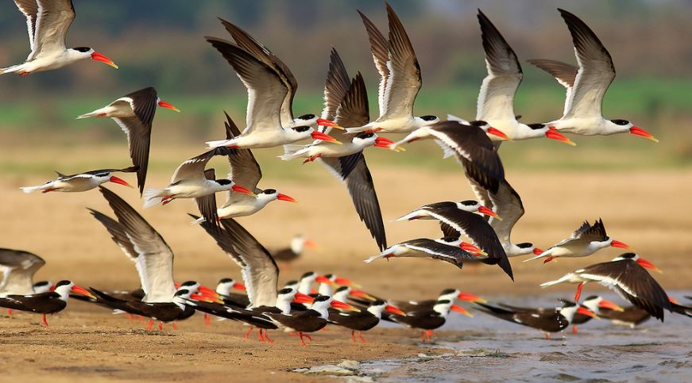
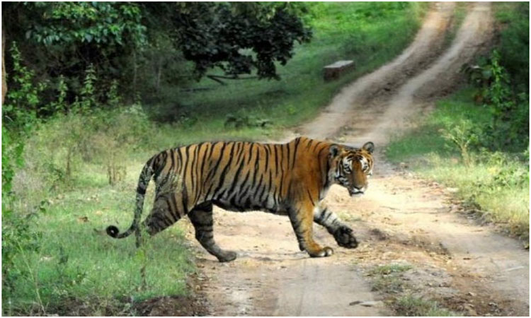
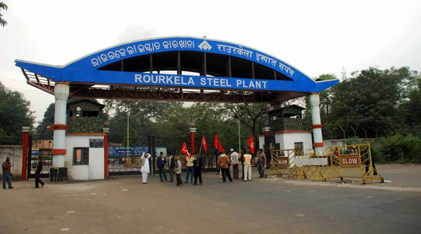
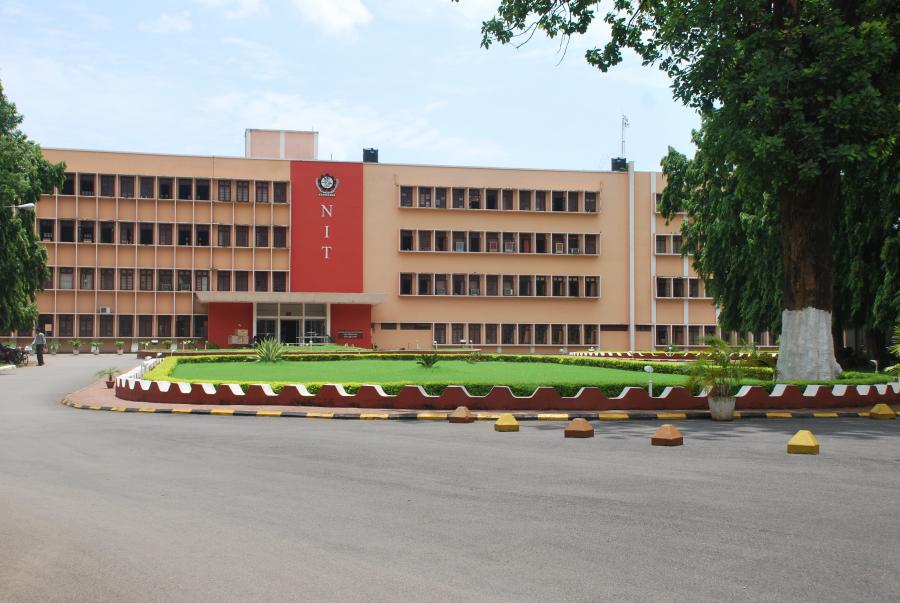

copyright 2019,Beautiful Places Of Odisha
Developed & Maintained by Mahesh Puran
It is the largest city in Odisha and is a centre of economic and cultural importance in Eastern India.Bhubaneswar is often referred to as a "Temple City of India". With Puri and Konark it forms the Swarna Tribhuja ("Golden Triangle"), one of eastern India's most visited destinations.

|

|

|

|
| Lingaraj Temple | Barabati Stadium | Kalinga Stadium | Dhauli Giri Shanti Stupa |
It is the district headquarters of Puri district and is situated on the Bay of Bengal, 60 kilometres (37 mi) south of the state capital of Bhubaneswar. It is also known as Sri Jagannatha Dhama after the 12th-century Jagannatha Temple located in the city. It is one of the original Char Dham pilgrimage sites for Hindus.

|
|

|
the east coast of India, at the mouth of the Daya River, flowing into the Bay of Bengal, covering an area of over 1,100 km2. It is the largest coastal lagoon in India and the second largest coastal lagoon in the world.It is the largest wintering ground for migratory birds on the Indian sub-continent. The lake is home to a number of threatened species of plants and animals
|  |

|
| Migratory Birds |
Simlipal National Park is a national park and a tiger reserve in the Mayurbhanj district in the Indian state of Odisha. It is part of the Similipal-Kuldiha-Hadgarh Elephant Reserve popularly known as Mayurbhanj Elephant Reserve, which includes three protected areas — Similipal Tiger Reserve (2750.00 km2), Hadgarh Wildlife Sanctuary (191.06 km2) and Kuldiha Wildlife Sanctuary (272.75 km2)).[1] Simlipal National Park derives its name from the abundance of semul (red silk cotton trees) that bloom here.[2] It is the 7th largest national park in India.
|  |
Hirakud Dam is built across the Mahanadi River, about 15 kilometres (9.3 mi) from Sambalpur in the state of Odisha in India. Behind the dam extends a lake, Hirakud Reservoir, 55 km (34 mi) long. It is one of the first major multipurpose river valley projects started after India's independence.

|
the northern part of Odisha, India. It is the third largest Urban Agglomeration in Odisha. It is situated about 328 kilometres (204 mi) north of state capital Bhubaneswar and is surrounded by a range of hills and encircled by rivers. The city is also popularly known as Ispat Nagar and also as the Steel City of Odisha. It has one of the largest steel plants of the Steel Authority of India Limited (SAIL) known as Rourkela Steel Plant. It also has one of the National Institutes of Technology (NIT Rourkela) of the country. The city has been selected as smart city in the third phase of smart city list on 20 September 2016. Among all the 27 city list Rourkela ranked 12th position on merit basis. Every year, on 3 March Rourkela Day is celebrated. Rourkela was declared India's Fastest Moving City (East Zone 2-10 Lakh).
|  |  |

|
| Steel Authority of India Limited (SAIL) | National Institutes of Technology (NIT Rourkela | Khandadhar Waterfall |